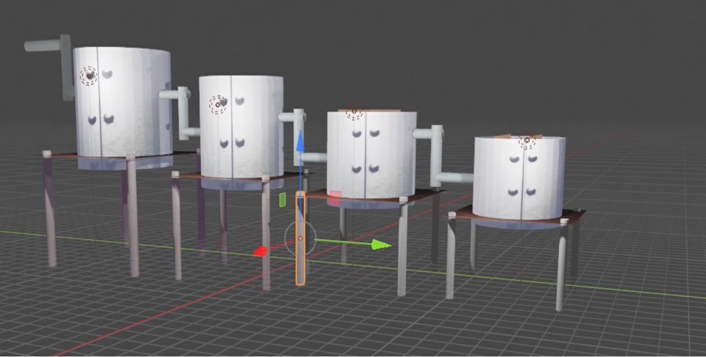
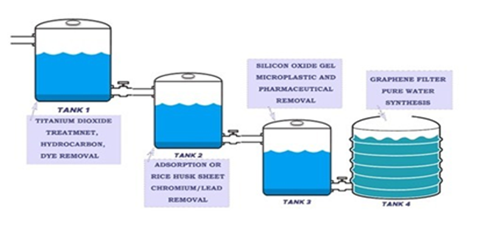

Water Purification
Using Titanium Dioxide
Services
Chemical Workflow,
Plant Design
Date
Feburary 2021 - April 2021

We have come with an idea which not only clears the polluted water but also makes it fit for drinking purposes and agricultural purposes also. The water purification system comprises four multistage. TiO2 envisaged that it would replace other processes in water treatment, such as Chlorination. It is also non-toxic and cheap. Plastic macroparticles and microparticles have the potential to affect marine ecosystems and human health. An innovative approach for the removal of microplastics from industrially used seawater combines chemical-induced silane-based agglomeration as a new technology implementation step. Heavy metal pollution of the aquatic environment can be detrimental to human health. Rice husk membrane is used to filter out these heavy nanomaterial contaminants such as Pb, Cr, Cd. For ultrafiltration, a graphene membrane will be used.
 This technique is highly efficient and cost-effective when compared to conventional water purification methods. This method can be a boon to solve the water crisis and make the unfit water resources fit for drinking, agriculture, and other purposes.